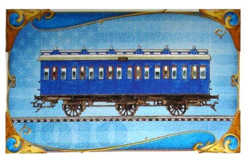
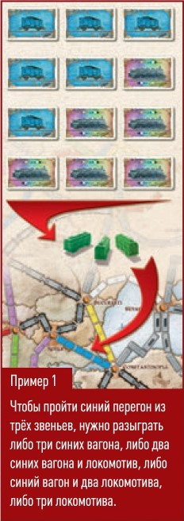
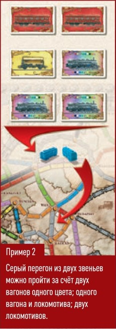
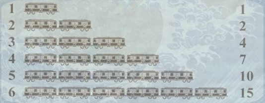

Добро пожаловать в "Билет на Поезд: Япония". Садитесь на поезд, чтобы осмотреть всю страну и полюбоваться горой Фудзи сквозь туман, или остановиться в горах, чтобы посетить снежных обезьян на горячих источниках. А ещё вы как раз вовремя, чтобы увидеть цветущие вишни возле древних замков. Также вы можете проследить красивый вид Японского моря, переправляясь через паромы. В любом случае, если вы решили путешествовать по Японии, наслаждайтесь поездкой и отмечайте свои пункты назначения раньше, чем ваши конкуренты.
Подготовка к игре
Доделать скрин
Цель игры
Цель игры - набрать как можно больше победных очков. Очки начисляютя за:
- прохождение перегона между двумя соседними городами;
- успешное прохождение маршрута - завершение нерерывной дороги между двумя городами с карты маршрута.
За каждый маршрут, который игрок не успеет пройти до конца партии, очки вычитаюся.
Ход игры
Первым ходит тот, кому довелось посетить больше... Затем ход передаётся по часовой стрелке. В свой ход вы должны выполнить одно из трёх действий: обновить парк, пройти перегон, выбрать новые цели.
Обновление парка - возьмите две карты составов. Если берёте вскрытый локомотив, вторая карта вам не положена.
Прохождение перегона - займит своими вагончиками один перегон между соседними городами. Для этого вам надо сыграть с руки нужное количичество подходящих по цвету карт. Поставьте свой вагончик на каждое звено пройденного перегона и получите очки в зависимости от его длины.
Выбор новых целей - возьмите три верхние карты из колоды маршрутов и оставьте себе хотя бы одну из них.
В игре используются 14 карт локомативов и 96 карт вагонов. Вагоны бывают восьми цветов: лиловы, белый, синий, жёлтый, оранжевый, чёрный, красный, зелёный.
Расходуя ход на обновление парка, вы можете взять две карты составов. Когда вы берёте карту, вы вправе либо выбрать одну из пяти вскрытых карт, либо вытянуть карту вслепую из колоды. Вы можете взять обе карты одинаковым образом или по-разному(либо обе карты из колоды, либо обе карты из вскрытых, либо первую из колоды, а вторую из вскрытых, либо первую из вскрытых, а вторую из колоды). Если берёте вскрытый локомотив, вторая карта вам не положена.
У игрока может быть сколько угодно карт составов в любой момент игры. Если колода с картами вагонов закончилась, то вы не можете выбрать действие "Обновление парка": проходите перегоы или выбирайте новые цели.
Локомотивы
Локомотивы - джокеры, ими можно заменить выгоны любого цвета.
Локомотивы разыгрываются при прохождении перегонов и заменяют любые вагоны. Кроме того, они необходимы на паромных переправах.
Взяв вскрытый локомотив со стола, игрок теряет право взять вторую карту в этот ход. Если игрок уже взял одну карту, вскрытый локомотив со стола он взять не может. Однако если локоматив достался игроку в закрытую из колоды, он вправе взять вторую карту.
Прохождение перегона
 Перегон - это железнодорожная линия между двумя городами, состоящая из нескольких звеньев (цветных или серых мест под вагончики). Чтобы пройти перген, игрок должен сыграть столько же карт составов, сколько звеньев в этом перегоне. Все эти карты должны быть одного цвета - такого же, как перегон. Игрок вправе заменять недостающие вагоны любого цвета локомотивами.
Серые перегоны можно проходить набором карт одного любого цвета по выбору игрока.
Пройдя перегон, он окрашивается в цвет, отличающий вас от других игроков. Затем игрок получает победные очки в зависимости от длины перегона.
Игрок может пройти любой перегон, который ещё не занят цветом. От него не требуется привязать новый перегон к одному из пройденных им ранее.
Перегон необходимо пройти целиком за один ход. Нельзя, например, выставить два вагончика на перегон из трёч звеньев и ждать следующего хода в надежде, что вы получите третью карту нужного цвета и завершите перегон.
Нельзя пройти больше одного перегона за ход.
Двойные перегоны
Некоторые города соединены двойными перегонами. В таких случаях игрок может выбрать, какой из двух доступных перегонов он будет проходить, однако один и тот же игрок не вправе занять оба перегона между городами.
Будьте внимательны: есть перегоны, которые хоь и проложены рядом, соединяют разные пары городов. Они не считаются двойными перегонами.
Паромы
Паромы - это особые перегоны, соединяющие города через водные преграды. Паромную переправу можно отличить по силуэту локомотива.
Чтобы пройти паромную переправу, игрок должен сыграть по карте локомотива, а также нужное число вагонов одинакового цвета за остальные звенья. Карты вагонов можно заменять локомотивами.
Выбор новых целей
Свой ход игрок может потратить на то, чтобы взять новые карты маршрутов. Для этого он тянет из колоды маршрутов три верхние карты.
Игрок обязан оставить себе от одной до трёх взятых карт. Карты остаются у игрока до конца игры, сбросить карты нельзя.
На каждой карте маршрута указаны города, которые игрок должен соединить своими вагончиками, и количество победных очков за прохождение маршрута, и вычитаются из его счёта, если маршрут не пройден. У игрока может быть сколько угодно карт маршрутов.

Конец игры
Если в конце хода у игрока осталось 2 или меньше вагончиков, все участники (включая этого игрока) делают ещё по одному последнему ходу. Затем игра завершается и подсчитываются победные очки.
Подсчёт очков
В течении игры игрокам начисляются очки, у кого больше очков тот и победил!
За что начисляются очки:
- За длину перегона
- За пройденные маршруты (если маршрут в карточке у игрока не пройдет, то, то количество очков, что указано на карточке вычитается из конечного счёта).
- Игрок, который проложил самую длинную непрерывную дорогу полуается 10 добавочных очков.